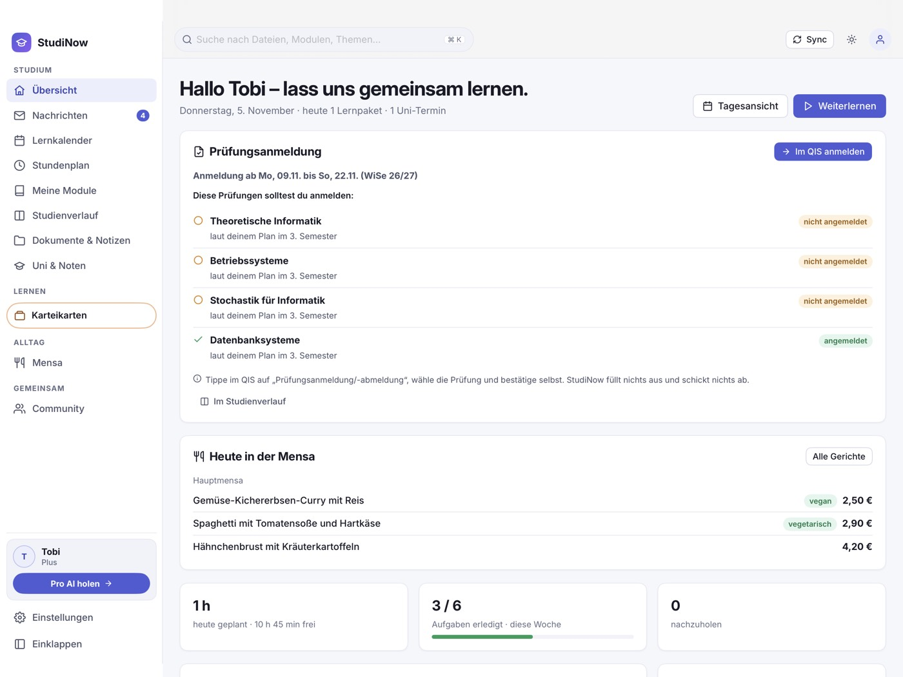
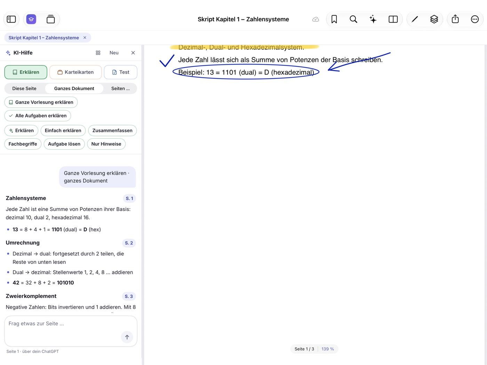
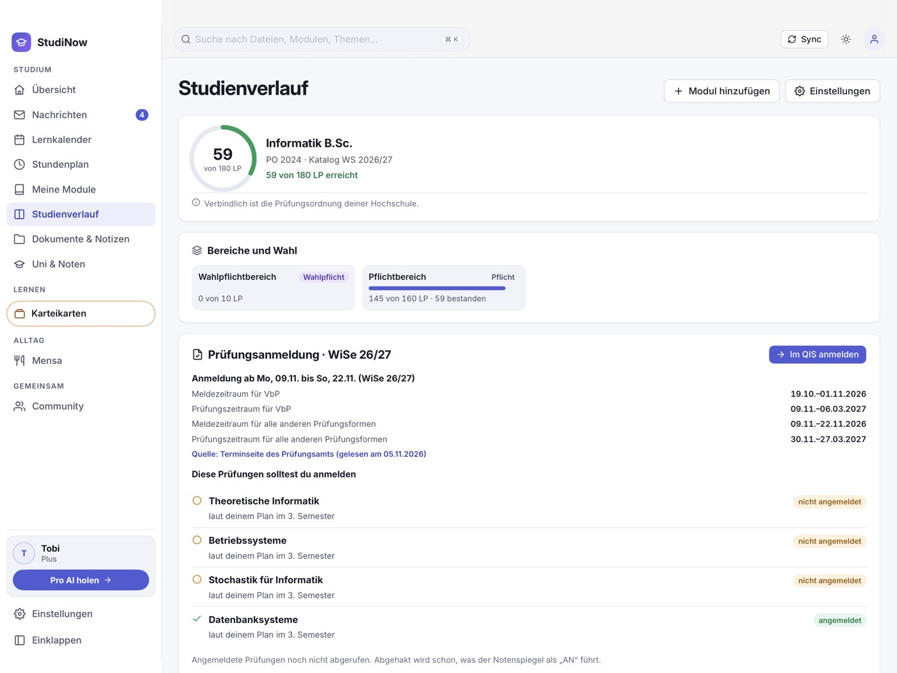
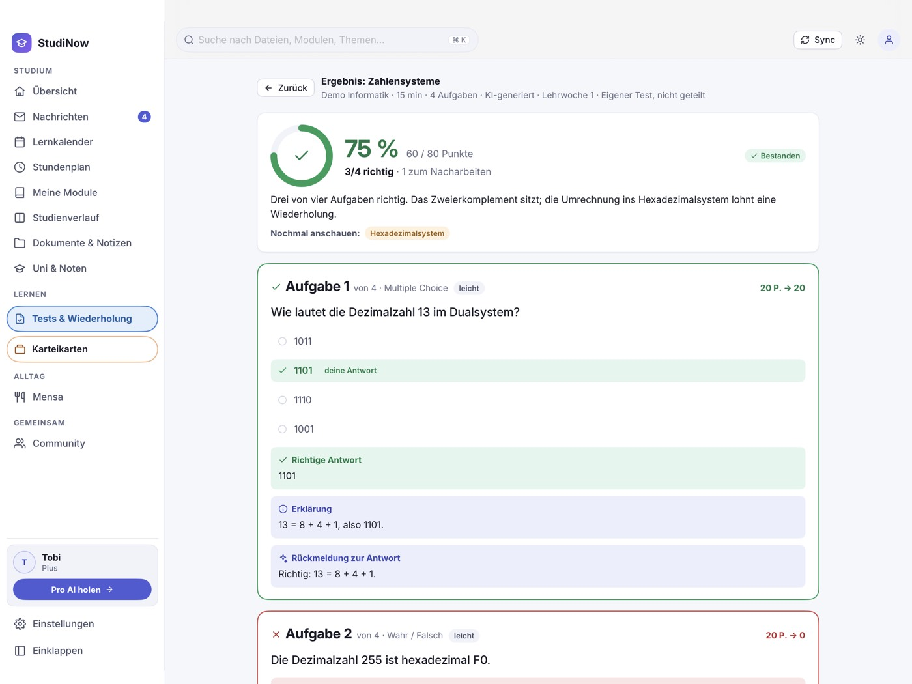
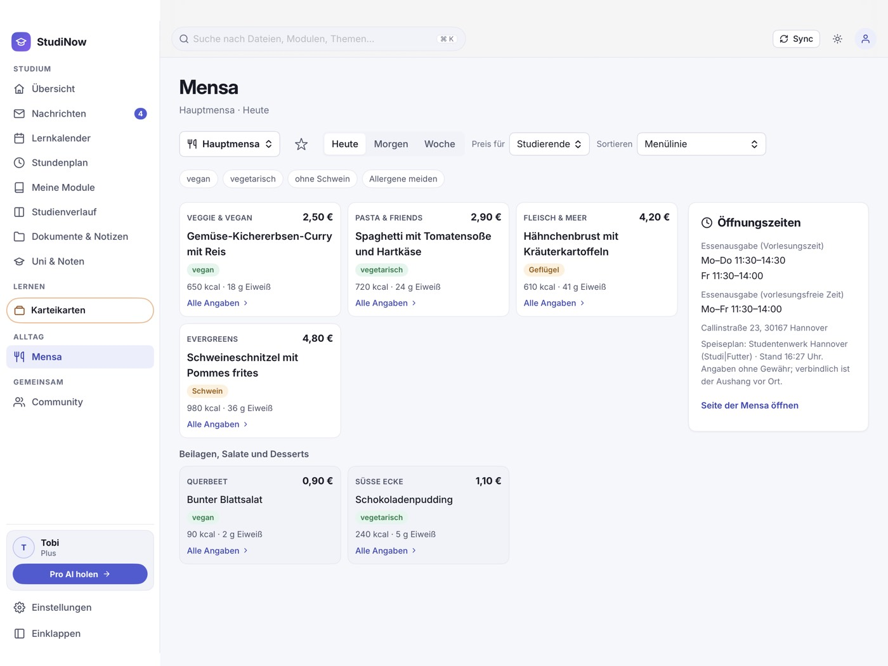

StudiNow holt Skripte, Übungsblätter, Termine und Nachrichten aus den Systemen deiner Hochschule auf dein
iPad. Du schreibst mit dem Apple Pencil, lässt dir ganze Vorlesungen erklären und übst mit Wochentests und Karteikarten.
Heute angebunden: Leibniz Universität Hannover, Hochschule
Hannover und Universität Hildesheim. Weitere Hochschulen folgen. Deine fehlt?
Schreib uns.
Bald verfügbar für das iPad, die iPhone-Version kommt bald. 7 Tage alles
testen, ohne Zahlungsdaten.

Deine Übersicht: Prüfungen, Mensa und Lernplan
Kein Uni-Passwort gespeichert. Du meldest dich bei deiner Hochschule an, nicht bei uns.
Deine Daten auf deinem iPad. Unterlagen, Notizen und Termine liegen lokal.
Kein Tracking, keine Werbung. Keine Analyse-Werkzeuge Dritter.
Heute für LUH, Hochschule Hannover und Uni Hildesheim. Weitere Hochschulen in Deutschland folgen.
Alles aus der Uni, ohne fünf Tabs
Melde dich einmal wie gewohnt an. StudiNow gleicht deine Kurse ab und ordnet alles nach Modulen, das aktuelle
Semester zuerst.
Stud.IP
QIS
Moodle
HISinOne
LSF
Unterlagen kommen von selbst
Neue Skripte, Folien und Übungsblätter landen im richtigen Modulordner. Erst das aktuelle Semester, ältere folgen im Hintergrund.
Nachrichten beantworten
Nachrichten aus Stud.IP und Moodle lesen und direkt aus der App antworten.
Abgeben in Stud.IP und Moodle
Deine bearbeitete Übung als PDF dort abgeben, wo der Kurs sie erwartet. Abgeschickt wird erst, wenn du es bestätigst.
Stundenplan und Lernkalender
Vorlesungen und Übungen im Wochenraster, Lernpakete in deinen freien Zeitfenstern.
Schreib ins Skript, frag die KI daneben
Mit dem Apple Pencil markierst und rechnest du direkt in Skript und Übungsblatt. Daneben sitzt die KI-Hilfe: Frag zur
offenen Seite oder nimm das ganze Dokument, zum Beispiel „Erkläre die ganze Vorlesung“ oder „Erkläre alle Aufgaben“.
Stift und Textmarker, Übung und Skript nebeneinander, Notizen als PDF
Ein Block je Abschnitt oder je Aufgabe, mit Seitenangabe zum Hinspringen
Bevor ein großer Lauf startet, siehst du, was er kostet
Die KI-Hilfe ist freiwillig. Nur was du ihr schickst, verlässt dein iPad.

Studienverlauf und Prüfungsanmeldung im Blick
StudiNow bringt die Modulkataloge von über 300 Studiengängen und Fächern mit: an der Leibniz Universität Hannover,
der Hochschule Hannover und der Universität Hildesheim. Du siehst deine Leistungspunkte, was in deinem Plan als
Nächstes kommt und welche Prüfungen du im Meldezeitraum anmelden solltest.
Leistungspunkte und Semesterplan aus deinem Modulkatalog
Melde- und Prüfungszeiträume mit Erinnerung, Klausurtermine im Kalender
Ein Tipp öffnet die Anmeldung im Prüfungssystem deiner Hochschule, bestätigen tust du dort selbst
Verbindlich sind immer die Prüfungsordnung und die Systeme deiner Hochschule.

Wochentests und Karteikarten, die mitlernen
Jede Vorlesungswoche ein kurzer Test, mit Erklärung zu jeder Antwort. Karteikarten sortierst du in Stapel je Modul,
StudiNow fragt fällige Karten zuerst ab: richtig heißt seltener, falsch heißt morgen wieder.
Lernstand je Modul aus Tests, Karten und Aufgaben
Stapel je Lernwoche teilen und die anderer übernehmen
Lösungen zu Übungsblättern mit anderen aus dem Kurs vergleichen

Was gibt’s heute in der Mensa?
Der Speiseplan deiner Mensa steht in StudiNow, mit den Preisen für deine Gruppe: Studierende, Bedienstete oder Gäste.
Auf der Übersicht zeigt dir die Karte „Heute in der Mensa“ die Hauptgerichte des Tages.
Heute, morgen oder die ganze Woche, Mensa wechseln und Favoriten merken
Nährwerte, Allergene und Kennzeichen zu jedem Gericht
Filter für vegan, vegetarisch und ohne bestimmte Allergene
Speisepläne vom Studentenwerk Hannover und vom Studierendenwerk OstNiedersachsen, für die Mensen in Hannover und
Hildesheim. Angaben ohne Gewähr, verbindlich ist der Aushang vor Ort. In jedem Tarif frei.

In drei Schritten startklar
StudiNow laden
Die App aus dem App Store aufs iPad holen. Die ersten 7 Tage ist alles frei.
Bei der Uni anmelden
Das Anmeldefenster deiner Hochschule öffnet sich. Dein Passwort gibst du dort ein, StudiNow speichert es nicht.
Loslernen
Kurse, Unterlagen und Termine sind da. Plan deine Woche, schreib ins Skript, üb mit Karten.
Preise
Zum Start testest du 7 Tage alles wie StudiNow Pro AI, ohne Zahlungsdaten. Danach gilt Free, deine Daten bleiben.
StudiNow Free
0 €
Studium organisieren und Unterlagen lesen
Abgleich mit deiner Hochschule
Speiseplan deiner Mensa
PDFs lesen, durchsuchen, Lesezeichen
Stundenplan, Lernkalender und Lernplanung
Lernstand je Modul
Eigenes ChatGPT zu deinen Folien fragen (bald verfügbar)
StudiNow Plus
1,99 €pro Monat
Alles aus Free, dazu:
Schreiben mit dem Apple Pencil
Übung und Skript nebeneinander
Eigene Karteikarten mit Stapeln
Wochentests
Community deines Kurses: lesen, fragen, Lösungen teilen
Karteikarten-Stapel von StudiNow übernehmen (4 im Monat)
StudiNow Pro AI
3,99 €pro Monat
Alles aus Plus, dazu die KI von StudiNow, ohne eigenes ChatGPT-Konto:
KI-Erklärungen, auch für das ganze Dokument
Fertige Fragen zu jeder Vorlesungswoche
Karteikarten aus deinen Unterlagen erstellen lassen
20 neue KI-Tests im Monat, Testbibliothek und Karteikarten-Stapel ohne Monatsgrenze
Notizen auf allen deinen Geräten
Preise inkl. USt. Ein Abo verlängert sich automatisch um einen Monat, wenn du es nicht mindestens 24 Stunden
vor Ende des laufenden Zeitraums in den Einstellungen deines Apple-Kontos kündigst. Nach dem Ende eines Abos bleiben alle
Notizen lesbar und exportierbar. „Ohne Monatsgrenze“ heißt faire Nutzung, höchstens 300 im Monat. Einzelheiten in den Nutzungsbedingungen.
Nein. Du gibst es im Anmeldefenster deiner Hochschule ein. StudiNow behält nur die Sitzung, bis du dich abmeldest
oder die Hochschule sie beendet. Auf Wunsch merkt sich iOS das Passwort im Schlüsselbund.
Wo liegen meine Daten?
Auf deinem iPad. Dateien, Termine, Notizen, Stundenplan und Lernkalender speichert die App lokal. Die Systeme deiner
Hochschule liest das iPad direkt. Was die KI-Hilfe bekommt, steht in der Datenschutzerklärung.
Was passiert nach den 7 Tagen?
Dann gilt StudiNow Free, ohne dass du etwas tun musst. Die Probe wird nie von selbst kostenpflichtig, und alles, was
du angelegt hast, bleibt da.
Für welche Hochschulen ist StudiNow?
StudiNow ist für Studierende in ganz Deutschland gedacht. Angebunden sind heute drei Hochschulen: die Leibniz
Universität Hannover (Stud.IP, QIS), die Hochschule Hannover (Moodle, HISinOne, QIS) und die Universität Hildesheim
(Learnweb, LSF), jeweils mit den Modulkatalogen der Studiengänge und dem Speiseplan der Mensen. Weitere Hochschulen
folgen. Deine fehlt? Schreib uns an support@studinow.app.
StudiNow ist ein unabhängiges Angebot und nicht mit den Hochschulen verbunden. Verbindlich für Termine, Fristen und
Noten sind immer die Systeme deiner Hochschule.
Gibt es StudiNow fürs iPhone?
Bald. Die App startet auf dem iPad, die iPhone-Version folgt.
Wie kündige ich ein Abo?
In den Abo-Einstellungen deines Apple-Kontos. Rechnungen und Rückerstattungen laufen über Apple. Wie du dein
StudiNow-Konto löschst, steht unter Konto löschen.